Contact
Adresse
7B rue Rémy Dumoncel 77210 AVON
Téléphone
06 49 57 89 15
Email
dklock.contact@gmail.com
Site Web
www.delphineklock.com
A propos de moi
Muséologue de formation, puis UX Designer & webmaster, je vais bientôt devenir Développeuse Web. Ce que j'aime dans le développement, c'est voir une interface prendre vie & avoir la satisfaction de résoudre un problème. Pour évoluer & progresser, j'utilise l'OBD - Objective based Design - une méthode de Design Thinking qui me permet de concilier mes valeurs & mon mode de vie. Je suis très sensible à la nutrition au service du bien-être, la sylvothérapie et au minimalisme. Quand je ne travaille pas, j'aime marcher en forêt & faire de l'escalade - j'habite à Fontainebleau - et j'aime voyager à l'autre bout du monde.
Loisirs

Formation
- 2020
- Fontainebleau
OpenClassrooms
Développeur-se Web
Formation à distance de 6 mois délivrant le titre de Développeur-se Web
- 2012 - 2014
- Champs-sur-Marne
Université UPEM
Master Culture & Métiers du Web
Formation ouverte à l'alternance qui prépare aux métiers de la gestion de projet web. Elle allie formation par la recherche et pédagogie par projet.
Expérience professionnelle
- 2018 - 2020
- Montreuil
Enedis
Webmaster
Pour le Studio Digital d'Enedis, je travaille au quotidien sur les espaces clients des Particuliers, Entreprises et Collectivités. Mon environnement de travail est le CMS Liferay sur lequel je réalise des tâches d'administration fonctionnelle, création & modification de contenus, et aussi amélioration de l'affichage responsive. Dans le cadre de la refonte de l'espace Particuliers sur une autre technologie, j'ai intégré des pages en html - css - js dans un template en php (en local sur Wordpress)
- 2017
- Paris
Muséum national d'Histoire naturelle
Webmaster éditoriale / UX Designer
Au sein du pôle numérique du Muséum, je travaillais essentiellement à la mise en ligne de nouveaux contenus sur les principaux sites web du Muséum créés sur le CMS Drupal. Dans le cadre de la mise en ligne du nouveau site du Parc Zoologique de Paris (PZP), j'ai également organisé & animé des tests utilisateurs dans une perspective d'évolution ergonomique du site.
- 2015 - 2016
- Courbevoie
Edelia
Designer UX
Dans le cadre de la refonte du service e.quilibre d'EDF, j'ai mené des entrevues pour cadrer le projet, réalisé des proto-personae pour guider la conception de la refonte, animé des ateliers de co-design, réalisé des prototypes pour les tests utilisateurs, collaboré & itéré pour trouver la meilleure solution à nos problématiques de design & promu le process UX au sein de l'entreprise.
Recommandations
Eva Venancio
Chargée de projets numériques
Muséum national d'Histoire naturelle
Email : eva.venancio@mnhn.fr
Nicolas Cellier
Développeur PHP
Muséum national d'Histoire naturelle
Email : nicolas.cellier@mnhn.fr